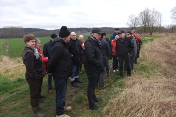

Herfst 2015 - Geleid bezoek aan het Huldenbergs gemeentehuis
Burgemeester Danny Vangoidtsenhoven verwelkomde de clubleden in het gemeentehuis.
Voor veel leden, die hun jeugd in Huldenberg doorbrachten, maar naderhand uitweken, was dit een eerste
kennismaking met het vernieuwde gebouw.
Architect Zjef Van Uytsel en oud-gemeentesecretaris Virgile Nijs – allebei °1945 – schetsten het
groeiproces van deze restauratie/ verbouwing/ nieuwbouw.
De oud-secretaris had ervoor gezorgd dat geboorteregisters van 1945 in de raadszaal te kijk lagen.
De burgemeester leidde de groep daarna rond in het administratief complex, voor de meeste deelnemers een
verrassende kennismaking met een moderne lokale administratie.
Naderhand was er het herfstetentje in zaal Pastoorsbos
Voorjaar 2014 - Wandeling in Neerijse

De lente-activiteit van 2014 bestond uit een natuurwandeling en een brouwerijbezoek. Onder leiding van
natuurgids Norbert Mosselmans – echtgenoot van jaargenote Renée Veiller – stapten we langs de IJse en
vernamen we allerlei weetjes over het parcours van deze rivier en over de planten die langs de oevers
groeien. De tocht eindigde in Neerijse aan brouwerij de Kroon. Eigenaar-meester-brouwer prof. Delvaux
(°1945!) leidde de clubleden rond in het historisch gedeelte van de brouwerij, maar vertelde vooral hoe
het hedendaags brouwproces er verloopt. En er was uiteraard een proeverij als slot!
Herfst 2012 - Barbecue in Hoeve Celongaet
Het herfstetentje van 2012 had plaats in hoeve Celongaet. Het is een prachtige vierkantshoeve met
indrukwekkende schuur, imposante inrijpoort en gezellige binnenkoer. De eigenares mevrouw Vlasselaer
verwelkomde de Club 45-leden hartelijk en schetste de geschiedenis van de hoeve. Op die binnenkoer
volgde een barbecue, verzorgd door ambachtelijke beenhouwer-traiteur Benoit Guns